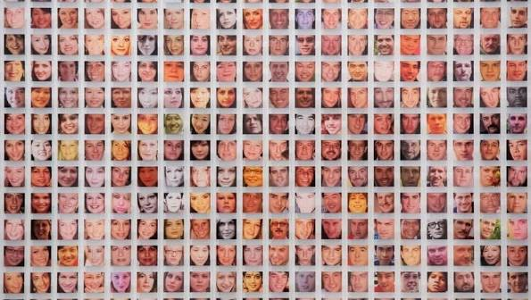

Paolo Cirio
Criminal Data
2022

Criminal Data is a video-based project about mugshots and criminal records that are available online. The project uses thousands of blurred mugshots shown together in large grids. By putting so many images together, Cirio shows how personal information can be collected, stored, and used as data. The project also raises questions about privacy and what happens when information about people becomes permanently available online.